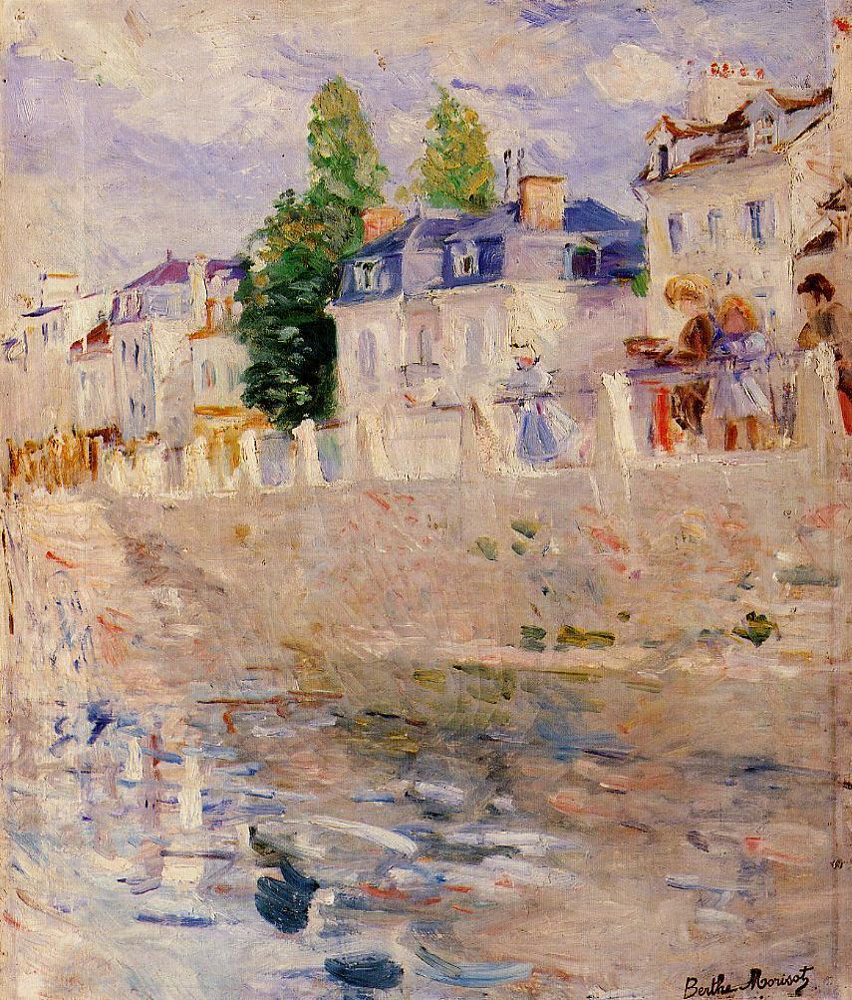

Tags: houses-and-buildings
Style: Impressionism
Artist: Morisot Berthe
Title: The Quay at Bougival
Year: 1883
Genre: cityscape
Categories: cliff (66.7%); castle (21.7%); cliff_dwelling (5.5%); jigsaw_puzzle (2.5%); monastery (0.9%)
Similar Images: